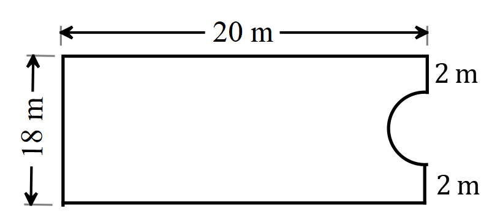

SSSCE 1998
Question 1:
Consider the following statements
\(S:\) All students with measles stay in the sick bay.
\(T:\) All students in the sick bay do not do homework.
Which of the following is/are valid deductions from the two statements?
- Kofi does not have measles so Kofi does his homework.
- George has done his homework therefore he does not stay in the sick bay.
- jane does not have measles so she does not stay in the sick bay.
Solve the equation \(243_x =73\) where \(x\) is the base of the number.
Question 2:
- Simplify \(\displaystyle\left(\displaystyle\frac{27}{64}\right)^{-\frac{2}{3}}\).
- Solve the inequality \(4x+3 \leq 3(2x-1)\). Illustrate your answer on the number line.
Question 3:
If \(C=216k\), find the least integral value of \(k\) that will make \(C\) a perfect square.
- In the diagram, \(WXYZ\) is a circle with centre \(O\). \(XZ\) and \(WY\) intersect at \(V\). \(\angle XOY = 110^\circ\) and \(\angle YVZ=100^\circ\). Calculate
- \(\angle XZY\)
- \(\angle WXZ\)
Question 4:
If \(t=\sqrt{\displaystyle\frac{p-r}{p+r}}\), find
- \(r\) in terms of \(p\) and \(t\).
- the value of \(r\), when \(t=3\) and \(p=10\).
Question 5:

The diagram above represents a rectangular compound 20 m by 18 m with a semi-circular portion cut off. Calculate
- the perimeter of the compound
- the area of the compound. \(\left[\text{Take } \pi = \frac{22}{7} \right]\)
Question 6:
- If \(3x-4=2(y-2)\), find \(\displaystyle\frac{x}{y}\), where \(y \neq 0\).
- Use logarithm tables to evaluate \(\displaystyle\frac{86.19 \times (0.0462)^2}{\sqrt{0.846}}\)
Question 7:
The diagram above shows a circle \(PQRS\) with centre \(C\). Quadrilateral \(CPSR\) is a rhombus \(\angle QPC = \angle CRQ = x\) and \(\angle PQR = q\).
- Find
- \(q\)
- \(x\)
- \(\angle QRS\)
- Show that triangle \(PQR\) is an equilateral triangle.
Question 8:
The table below shows the expenditure pattern of a family in 1993. The net income of the family for 1993 was 1.8 million cedis.
| Item | Percentage |
|---|---|
| Food | 60 |
| Clothing and footwear | 22 |
| Rent, transport and household equipment | 7 |
| Education, entertainment and recreation | 7 |
| Miscellaneous goods and services | 4 |
- Calculate the amount the family spent on
- food
- miscellaneous goods and services
- The family’s income for 1994 increased by \(35\%\). At the same time expenditure for food recorded an increase of \(20\%\). Find the amount the family saved at the end of 1994.
Question 9:
- Using a ruler and a pair of compasses only, construct
- a quadrilateral \(ABCD\), where \(|AB|=8\) cm, \(|AD|=6\) cm, \(|BC|=10\) cm, \(\angle BAD=60^\circ\) and \(\angle ADC=135^\circ\);
- the locus, \(l_1\) of points equidistant from \(BC\) and \(CD\);
- the line, \(l_2\), from \(B\) perpendicular to \(l_1\).
- Locate \(E\), the point of intersection of \(l_1\) and \(l_2\).
- Measure \(|AE|\) and \(|DE|\).
Question 10:
- Copy and complete the following table of values for the relation \(y=10+6x-3x^2\) for \(-3 \leq x \leq 5\).
| \(x\) | \(-3\) | \(-2\) | \(-1\) | \(0\) | \(1\) | \(2\) | \(3\) | \(4\) | \(5\) |
|---|---|---|---|---|---|---|---|---|---|
| \(y\) | \(10\) | \(13\) | \(1\) | \(-14\) |
Using a scale of 2 cm to 1 unit n the \(x\)-axis and 2 cm to 5 units on the \(y\)-axis, draw the graph of the relation for the given interval.
- From the graph, solve the equation
- \(10+6x-3x^2=0\)
- \(5+2x-x^2=0\)
Find the equation of the axis of symmetry.
Question 11:
A ship sails due north from a point \(P\) to a point \(Q\), 4 km away. It then sails on a bearing of \(090^\circ\) to a point \(R\), 3 km from \(Q\). Find the distance between \(P\) and \(R\).
Two points \(A\) and \(C\), on opposite sides of a vertical pole, are on the same level ground as the foot of the pole, \(B\). The angles of elevation of the top of the pole \(D\) from \(A\) and \(C\) are \(30^\circ\) and \(48^\circ\) respectively. If the distance between \(A\) and \(C\) is 50 m, find \(|BD|\), the height of the pole.
Question 12:
Two fair dice, \(A\) and \(B\), each with faces numbered 1 to 6 are throw together.
Construct a table showing all the equally likely outcomes.
- From your table, list the pair of numbers on the two dice for which the sum is
- 5
- 10
- more than 10
- at least 10
- Find the probability that the two dice shw
- different scores
- same scores
- Find the probability that the sum of the numbers on the two dice is
- 5
- 10
- more than 10
- at least 10